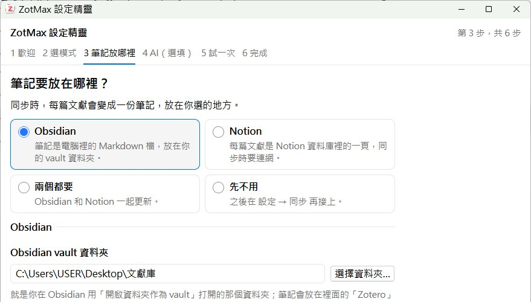
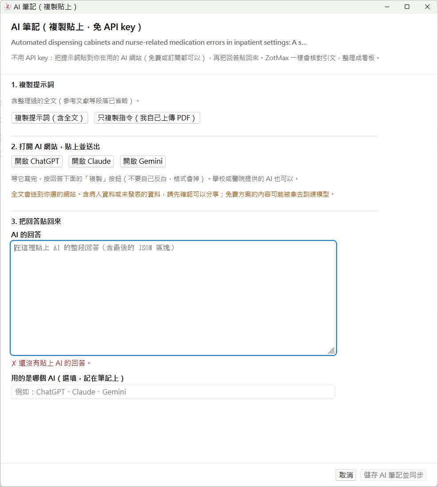
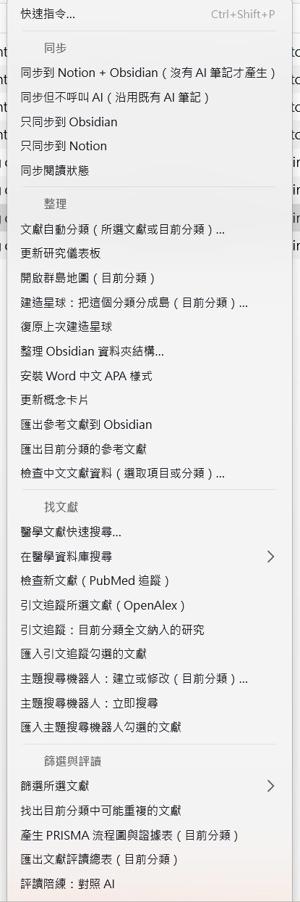

01
安裝INSTALL
① 到 GitHub 下載 .xpi
Releases 頁面的 zotero-bridge-0.39.0.xpi（舊名，同一個外掛）
② Zotero → 工具 → 附加元件
右上角齒輪 → Install Plugin From File…
③ 只要裝一次
之後 Zotero 會自動更新 ZotMax；裝好設定精靈會自己跳出來


02
設定精靈SETUP WIZARD · 約 3 分鐘


新手選「研究生引導」
找文獻、AI 草稿先關著；整理、評讀、搜尋照常能用
筆記放哪裡
Obsidian：按「選擇資料夾」選 vault
Notion：貼 token，精靈可以幫你建資料庫
按「略過」什麼都不改
Esc 關掉，存過的設定都會留著；快速指令搜「設定精靈」可以重跑
網頁版 AI：複製、貼上、存回來


① 右鍵 → ZotMax
選「AI 筆記（複製貼上，免 API key）」
② 複製提示詞
貼到 ChatGPT／Claude／Gemini 或學校的 AI
③ 把回答貼回來
按「儲存 AI 筆記並同步」
03
同步SYNC


① 選幾篇文獻
第一次先選 3～5 篇
② 工具列的 ZotMax 按鈕
選「同步到 Notion + Obsidian」
不想花 AI 費用
選「同步但不呼叫 AI」
找不到功能？
按 Ctrl+Shift+P 打字找，中英文都可以
一個主題是一顆星球，子分類是島

開發度
已讀＋評讀核對＋AI 筆記；🌱 荒島 → 🏙️ 城鎮
升級提示
例如「再讀 2 篇 → 開墾中」
🎯 本週任務
每週一挑 2–4 件事，做完自動打勾
群島地圖
房子＝文獻，可以下載圖片放進投影片
01 • 16
← → 換頁 F 全螢幕 N 講稿 ? 說明